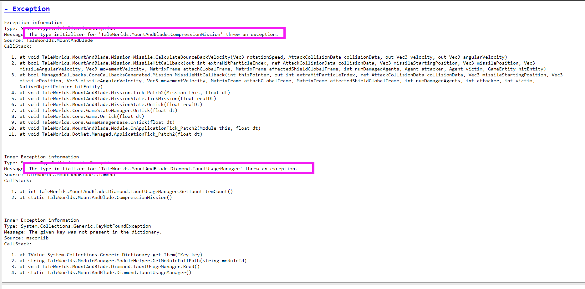
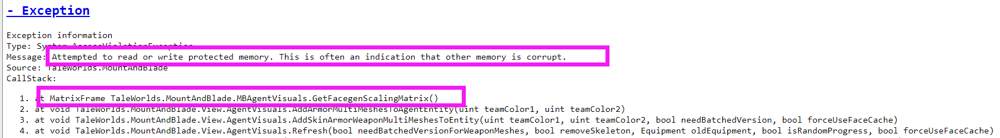

第一类问题
进不去游戏、开不了新档：
100%是你安装过程出现问题，请点击页面上方安装教程查看详情。
兼容性：
已知不能与这些mod同时使用：旗帜之王等大型mod，其他任何修改地图的mod，侠盗人生（会导致对话覆盖）、贵族头衔、七级兵解锁、真实战斗的战斗模块（AI模块兼容）。另外，搭配自定义兵种等mod可能会大幅降低游戏难度，因为星星扩展有很多强力的装备，但是正常情况这些装备获取难度很高，而有的mod能够轻易将其装备到士兵身上，这就会导致自定义士兵的强度在前期就很变态。还有真实掉落装备类的功能mod也是如此，会大幅降低难度。
请先查看以下描述是否为你所遇到的情况，然后往下滑动至“第二类问题”，并按提供的方案解决。
血量加成异常（太高）：已知此问题只在F4.1.0出现，如果你遇到了这个问题，请更新中文站最新版F4.1.0.2（或者赞助群的最新版）
加载存档报错：如果你使用的是星星扩展4.0.5、4.0.6版本，请确保游戏的版本是1.2.7-1.2.8，1.2.9版本及其以上必定报错！！！！
开局文化不要选择反星联盟：这个文化是给其他势力做的，玩家最好不要选择，否则后面会出问题。
大地图卡顿，劫匪人数太多：在mod选项里面开启自动清理劫匪，然后每天都会对指定数量的劫匪进行自动清理。
大地图劫匪类型部队太少：请清理一下藏身处。大地图的劫匪部队人数总量是有一定限制的，藏身处人数太多会导致野外的强盗类型部队刷新减少。
（战役模式）进城报错或者大地图走着报错：如果你玩的战役模式，请在满足触发拉达哥斯救家人任务之后，不要进地图边边角角上的城，而是去地图偏向于中间的城触发“和拉达哥斯见面”的任务，因为边边角角上有的新增藏身处，在新增藏身处旁边的城镇触发救家人任务会报错。
反星联盟出现之后报错：已知此问题只出现在星星扩展4.0.6版本，如果你是这个版本，请在中文站更新F4.1.0版本。（或者赞助群的最新版）
进军营卡顿或报错：请离开城镇一下再进入军营，这样就不那么卡。也就是说不要再离开城镇之前多次进入军营，否则会卡顿。
加载战斗报错1：请不用使用星星铁匠铺锻造的飞刀，否则可能引起报错。
加载战斗报错2：请保证自己队伍里面没有反星联盟（带有暗影前缀的）的英雄，有的话必报错。
女侠对话不显示天数：在游戏中等一天再去问就有了。
军营不显示英雄专属技能：在游戏中等一天就有了。
风休住部队卡到非可行走区域：下载这个修复器mod来修复这个问题，点击下载星星修复器（提取码1111）
不显示装备：如果大地图都正常只是不显示装备，那么检查你的mod中是否有军火商或者北与血，有的话必须放星星扩展下面才能正常加载。如果连地图都不是星星扩展的，那么就是安装出现了问题。
招募匠神报错：1.2.0及其之后的版本，招募匠神时，对完话之后需要等他恢复打铁动作再退出场景，否则可能报错。如果一直不恢复，尝试对话刷新一下即可恢复。
3.6.4版本之后，玩家三个技能（火墙、水遁、阿尔法突袭）和流浪星星开局模式对电脑的性能要求比正常要高一些，如果在使用三个技能时报错，请清理电脑内存或者不要再使用三个技能；流浪星星模式由于开局全图黑雾覆盖，也更加耗费性能，如果该模式加载的时候出现报错，而其他开局不出现，说明你电脑当前的状态不合适此模式，清理内存有可能解决；
第二类问题
1.在游戏加载进入场景界面或者战场上或者大地图报错，点开Exception后看到如下内容：
（常用的解决方案是重启电脑、关闭后台其他软件，调低大地图画质，设置5分钟自动保存等等，如果是刚进游戏没几秒钟就出现，请在进游戏之后不要将大地图拉高，保持尽可能低的镜头走，就不容易触发此报错。如果上述方法解决不了，请尝试这个（此方法几乎能100%解决此问题）：进游戏之后在尽可能接近报错的时间点保存退出，然后重进，如果你不清楚大概什么时候时候报错，就尽可能频繁的保存退出然后重进，当你慢慢接近报错的时间点的时候，你就会发现不会报错了。之后也不会再出现这个报错了。如果出现，可以继续使用这个办法。） 这个报错我们常称之为“内存溢出”，这是由于mod增加了地图范围、大地图部队数量等，在某些时候由于系统释放内存不及时，导致内存溢出。这个问题与硬件有一定关系，但不仅仅与硬件有关，与骑砍本身的代码和mod新增内容都有关，而且并不是说内存大就不会报错，内存小就经常报错。常用的解决方案是重启电脑、关闭后台其他软件，调低大地图画质，设置5分钟自动保存等等。
1-2.在战场报错，点开Exception后看到如下内容：
（常用的解决方案是重启电脑、关闭后台其他软件，调低战场人数等。） 从1.1.5版本以来，经常出现这个问题，“Attempted to read or write protected memory. This is often an indication that other memory is corrupt”这个问题很特殊，没办法从mod代码或者游戏上层代码去解决。就好比一个老师帮学生修改错题，但是发现纸破了一个洞，老师能修复错题，但不能修复破纸。所以请按照上述方案，或者看以后的骑砍版本会不会优化这个问题。
2-1.在进入存档时出现这这个报错：
请更新最新版本（F4.1.0）或者赞助版的4.1.3及其之后的版本。
2-2.在游戏中出现这个报错：
已知此问题只在星星扩展4.0.6和4.0.6.1版本才会出现，如果你遇到此问题，请在中文站更新新版本（当前是F4.1.0）
2-3.在游戏中出现这个报错：
进游戏之后在报错之前保存一下重进游戏就好了。
2-4.在加载存档时出现这个报错：
这个问题在通常在新档中发生，且新档时间不长，而且发生概率很低。如果你遇到请下载此补丁解决。（注意看清楚补丁版本） 加载存档报错补丁01【提取码1111】
2-5.在大地图出现这个报错：
这个问题发生概率很低。如果你遇到请下载此补丁解决。（注意看清楚补丁版本） 大地图报错补丁02【提取码1111】
2-6.战斗场景报错：
如果你出现此报错，请将四前置和其他所有非骑砍本体的mod全部取消勾选，然后进游戏看一下是否还会报错，如果还会请重新安装游戏本体。此报错与mod无关。
2-7.在大地图出现这个报错：
这个问题通常可能发生在存档的后期，如果遇到此问题，请下载这个补丁（注意看清楚补丁版本） 年龄变化报错补丁01【提取码1111】
3.正常游戏时（不包括开新档时、也不包括在主菜单时）出现下面这样的崩溃弹窗：

①首先你应该验证一下游戏完整性，在steam里面。如果不知道怎么验证，自己网上查。很多新手会不知不觉的修改原版文件，导致出现各种乱七八糟的问题，经常验证完整性是有好处的。
①然后测试一下，不加任何mod或者只加四前置mod，重复你刚才的行为，看是否会报错。如果报错，请重装游戏或者四前置再次测试。
①其次可以尝试点击崩溃报告中的“Attempt to continue”或者“close report”，如果还出现就一直点，某一些错误通过点击这个也能解决。
②然后尝试只加星星扩展mod，但是注意不要在存档中途增减mod，这很容易造成坏档或者报错！！增减mod最好开新档。因为很多报错并不是星星扩展造成的。
③重新进入游戏看是否在同一时间、同一地点或者同一事件中报错，意思就是重进后不要进行和之前相同的事件，比如攻城、经过某个地方等等，很多时候改变事件之后就不会发生这种错误。
④如果你决定在群里提问，请务必！点击报错弹窗上的“Save Report”按钮来保存崩溃报告，并在提问的时候附带上这个文件。
3-2重要提示：普通玩家查看崩溃报告的办法：（请务必仔细看，这个看完之后再根据情况查看后面的具体解决方案）
4.在游戏中出现下面这样的崩溃弹窗：【游戏中！也就是说你已经进入游戏之后的弹窗，如果还没进游戏就弹窗，请点击上方安装教程查看问题】

①首先尝试重新进入游戏看是否在同一时间、同一地点或者同一事件中报错，意思就是重进后不要进行和之前相同的事件，比如攻城、经过某个地方等等，很多时候改变事件之后就不会发生这种错误，如果仍然出现，请看下面的解决方案。
②在群里说明具体的时间、地点、触发事件，并说明只有小弹窗报告。大群人多，我可能不会第一时间看到，赞助群里面一般能及时回复。
5.在游戏加载进入场景界面报错：GPU实例已经暂停

解决方案：这个问题通常是由于硬件问题造成的，也可能是其他原因，请尝试去掉模型质量过高的mod，或者重启电脑，或者提升显卡性能，或者网上查阅其他解决办法。（在网上查时，可以搜索关键词“骑砍二报错GPU实例已暂停”或者“Mount&BladeII d3d_device_context...”，能够找到其他人的解决办法，因为这个弹窗是一个普遍存在与任何mod和原版中的问题，网上能找到很多解决方案。）
6.在游戏加载进入场景界面或者战场上或者大地图报错，点开Exception后看到如下内容：
请不要将皮套和其他头盔、护甲之类的混用，不然会出现此报错。（具体上讲就是装备模型严重穿模，比如带了一个头盔或者头饰，再装备一个皮套的头套，大概率会出现此问题。）
4-1.在点击载入游戏时出现下面这样的崩溃弹窗：【注意是点击“载入存档”时，也可能是大弹窗，都用这个办法解决】
解决方案：新加一个无关紧要的小mod（或者去掉一个无关紧要的小mod）再开始游戏，提示mod版本不匹配时选择“是”就好了。原因解析：这个问题发生的原因是玩家保存退出时所穿的装备在存档界面右侧的英雄角色预览那里没办法正常显示造成的报错，而增减一个小mod会让角色预览不显示（直接显示黑影） ，这样就避免了显示装备不成功而引起报错。如果希望避免这个问题，在保存退出时，还上原版装备能够解决此问题。
什么是有效提问：（如果你要在群里提问，请务必先查看此内容，但是强烈建看完本页面所有内容之后不能解决再提问）
不管你出现的是什么问题，当你在向他人提问时，你的目的只有一个，那就是想得到切实可行的解决问题的方法，这一点是肯定的。
现在比如你在群里问一个很简单的问题“进入战场闪退怎么办？”，那么你是百分之百不可能得到你想要的答案的，因为这样问和你百度查询这个问题是一样的，可能查到100种解决方案，但是都不属于你的那种情况，如果真有群友回答，对于你也极大概率不适用。所以请不要再进行这种无效提问。
那么如何才是有效提问？首先，你必须提供你的各项情况，比如你加的mod有哪些，你的游戏版本是多少，mod版本是多少，你的电脑配置是多少，你的存档时间，你的报错具体触发的事件，还有最重要的是崩溃报告，如果没有崩溃报告，请务必提供崩溃弹窗的截图，如果没有任何弹窗，请务必描述清楚闪退的过程。你只有提供足够多的信息，别人才能够判断具体原因和推导出解决办法，也才能给你提出专属于你的问题的解决方案。这才是有效提问。请务必记住这一点，这个不仅仅适用于骑砍或者游戏，在任何时候提出问题之前都应该考虑这些问题。
遇到问题学会在网上查找，没人生来就会解决问题，大佬往往不仅仅是懂得很多，而是更懂得如何查找问题，如何在网上获取自己需要的信息。古人不就已经说了：君子性非异也，善假于物也。
科学的方法是解决任何问题的关键，以下是一些常见的排错方法：控制变量法--假如你现在加了一些mod但是进不去游戏，这个时候需要控制可能引起报错的因素 ，你应该先不勾选任何mod，看是否能进游戏，是否正常运行；然后只勾选四前置mod看是否正常，然后把mod一个一个加上，看是否都正常，这样就很容易找出问题。二分查找法--如果加的mod比较多，可以使用二分法来找出问题mod，先去掉一半mod，看是否正常，不行就将勾选的再去掉一半，行的话就将去掉的部分重新勾选一半。多次尝试避免偶然性--很多报错都是具有偶然性的，重启电脑或者重装游戏都有可能解决，或者改变游戏里面做的事情也有概率不会触发报错，遇到报错请务必多次尝试。
任何一款游戏或者mod，几乎都不可能做到绝对无bug。特别是对于免费发布的mod，作者通常会尽可能的去修理一些问题，但是这个并不是义务。如果你遇到的bug不是很严重，比如做一个游戏原版任务时就报错，那么这个问题最简单的解决办法就是不做这个任务，凡是这类不会导致游戏玩不下去的bug，作为玩家应该需要自己适应。玩家与作者之间往往需要一个双向的适应，你不能一遇到什么小问题就找作者修复，作者也和你们一样只是普通玩家，没人是学开发mod专业的。
最后，如果你所有方法都试了，就是解决不了，而且你还特别想解决，那么我可以远程协助，我能够解决你们99%的问题，任何稀奇古怪的我都能给你解决，不管你是否加了星星扩展mod，还是加了其他什么mod，我确实都能给你找到问题并解决，但是这个不是免费的，具体收费根据问题复杂程度而定。虽然是这样，但是如果你自己本身对mod不是很了解，我还是建议不要加太多mod，稀奇古怪的mod加太多会导致很多问题。
简介
此网站暂时专门用于解决以下问题：
骑砍二玩家们在使用星星扩展的一系列问题，包括安装和报错问题。
实时提供mod的最新消息，以供喜爱本mod的朋友们及时获取。
分享作者写的或者将要写的一些mod基础教程以及其他mod制作相关的工具。
使用提示
单击网站内的图片可放大！